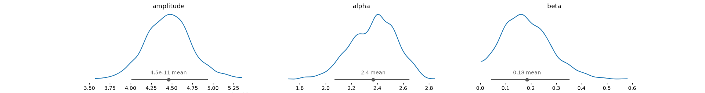
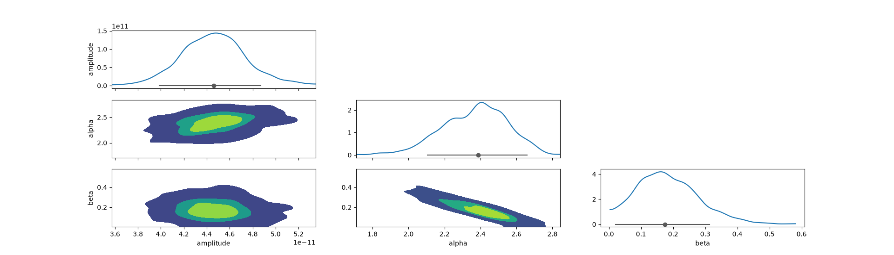
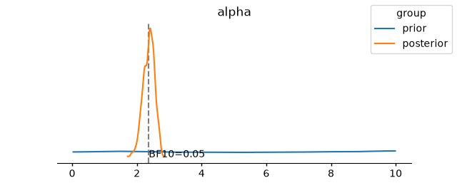
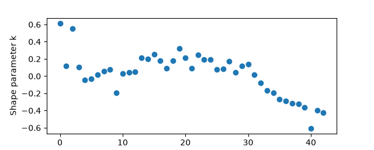
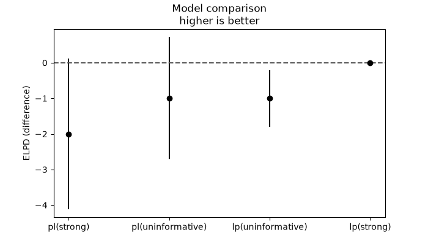

Note
Go to the end to download the full example code or to run this example in your browser via Binder.
Bayesian model selection#
An overview of Bayesian model selection combining Gammapy with UltraNest and ArviZ packages.
Context#
For a general overview see the arviz guides:
https://arviz-devs.github.io/EABM/Chapters/Model_comparison.html
https://arviz-devs.github.io/EABM/Chapters/Sensitivity_checks.html
Most of the text is directly taken from this reference and examples have been adapted to a gamma-ray analysis with Gammapy.
Here we are going to focus on the following questions:
What are the common information criterion used for model selection nowadays?
how model comparison is sensitive to the choice of prior?
how the parameter posterior is sensitive to the choice of prior?
Prerequisites#
This is an advanced tutorial that requires to be familiar with Gammapy modeling features and statistics.
Knowledge Bayesian analysis and nested sampling, see the Bayesian analysis with nested sampling tutorial.
Reading the arviz guides previously mentioned could be a useful start.
Proposed approach#
In this example, we will perform a Bayesian analysis with multiple 1D spectra of the Crab nebula data. Then we will discuss how to interpret the posterior distributions, the sensitivity to prior of the different information criterion used for model selection, and how to define the priors.
Setup#
As usual, we’ll start with some setup …
import arviz as az
import matplotlib.pyplot as plt
import numpy as np
from gammapy.datasets import Datasets
from gammapy.datasets import SpectrumDatasetOnOff
from gammapy.modeling.models import (
SkyModel,
UniformPrior,
LogUniformPrior,
GaussianPrior,
create_crab_spectral_model,
Models,
)
from gammapy.modeling import Sampler
from gammapy.modeling import BayesianModelSelection
from gammapy.stats.utils import ts_to_sigma
import warnings
warnings.filterwarnings("ignore", category=RuntimeWarning)
Loading the spectral datasets#
Here we will load a few Crab 1D spectral data for which we will do the analysis.
Model definition#
The Crab spectra will be modelled here with a powerlaw or a log parabola with prior of different strength (names are indicatives).
Create a set of alternative models with different spectral shapes and prior strengths
alternative_models = {}
models_types = ["lp", "pl"]
prior_types = ["uninformative", "strong"]
for model_type in models_types:
for prior_type in prior_types:
model_name = f"{model_type}({prior_type})"
model = SkyModel.create(spectral_model=model_type, name=f"crab-{model_name}")
model.spectral_model.reference.value = 1
ref_model = create_crab_spectral_model("magic_lp")
if model_type == "lp":
if "uninformative" in prior_type:
model.spectral_model.amplitude.prior = LogUniformPrior(
min=1e-14, max=1e-8
)
model.spectral_model.alpha.prior = UniformPrior(min=0, max=10)
model.spectral_model.beta.prior = UniformPrior(min=0, max=10)
elif "strong" in prior_type:
model.spectral_model.amplitude.prior = LogUniformPrior(
min=1e-11, max=1e-10
)
model.spectral_model.alpha.prior = GaussianPrior(
mu=ref_model.alpha.value, sigma=0.1
)
model.spectral_model.beta.prior = GaussianPrior(
mu=ref_model.beta.value, sigma=0.1
)
elif model_type == "pl":
if "uninformative" in prior_type:
model.spectral_model.amplitude.prior = LogUniformPrior(
min=1e-14, max=1e-8
)
model.spectral_model.index.prior = UniformPrior(min=0, max=10)
elif "strong" in prior_type:
model.spectral_model.amplitude.prior = LogUniformPrior(
min=1e-11, max=1e-10
)
model.spectral_model.index.prior = GaussianPrior(
mu=ref_model.alpha.value, sigma=0.1
)
alternative_models[model_name] = Models(model)
print(alternative_models)
{'lp(uninformative)': <gammapy.modeling.models.core.Models object at 0x7fb52f8e4920>, 'lp(strong)': <gammapy.modeling.models.core.Models object at 0x7fb52fe331d0>, 'pl(uninformative)': <gammapy.modeling.models.core.Models object at 0x7fb52f95bef0>, 'pl(strong)': <gammapy.modeling.models.core.Models object at 0x7fb52ef73230>}
Defining the sampler and options#
Defining the model selection manager#
We define a BayesianModelSelection that will run the
inference:
bms = BayesianModelSelection(
sampler, posterior_downsample_factor=4, n_prior_samples=1000
)
Next we can run BayesianModelSelection that will run a
sampler on the datasets for each of the alternative_models.
No other option is accepted in the run method.
logZ = -29.174 +- 0.431
single instance: logZ = -29.174 +- 0.192
bootstrapped : logZ = -29.182 +- 0.391
tail : logZ = +- 0.182
insert order U test : converged: True correlation: inf iterations
amplitude : 0.0000000000349│ ▁▁▁▁▁▁▁▁▃▂▄▅▇▅▆▇▇▇▆▇▆▄▃▂▂▂▁▁▁▁▁▁▁▁▁▁▁ │0.0000000000563 0.0000000000446 +- 0.0000000000028
alpha : 1.41 │ ▁ ▁▁▁▁▁▁▁▁▁▂▃▃▃▅▅▇▆▇▇▇▇▆▅▄▃▂▂▁▁▁▁ │2.91 2.37 +- 0.18
beta : 0.000 │▁▃▃▄▄▅▆▅▅▇▇▅▆▅▅▅▄▃▂▂▂▂▁▁▁▁▁▁▁▁▁▁▁ ▁ │0.658 0.186 +- 0.095
logZ = -20.750 +- 0.210
single instance: logZ = -20.750 +- 0.100
bootstrapped : logZ = -20.769 +- 0.105
tail : logZ = +- 0.182
insert order U test : converged: True correlation: inf iterations
amplitude : 0.0000000000361│ ▁▁▁▁▁▁▁▂▃▃▄▆▇▆▇▇▇▇▇▆▆▅▄▄▃▂▂▁▂▁▁▁▁▁ ▁▁ │0.0000000000554 0.0000000000450 +- 0.0000000000026
alpha : 2.182 │ ▁▁▁▁▁▁▁▁▂▂▃▄▅▄▅▅▆▆▆▇▆▇▆▅▄▃▃▂▂▂▁▁▁▁▁ ▁ │2.744 2.464 +- 0.083
beta : -0.019│ ▁▁▁▁▂▂▂▃▄▅▅▆▅▇▇▇▇▆▅▅▄▃▃▂▁▂▁▁▁▁ ▁ ▁▁ ▁ │0.339 0.130 +- 0.049
logZ = -26.633 +- 0.298
single instance: logZ = -26.633 +- 0.157
bootstrapped : logZ = -26.661 +- 0.236
tail : logZ = +- 0.182
insert order U test : converged: True correlation: inf iterations
index : 2.436 │ ▁ ▁▁▁▁▁▁▂▃▂▄▄▄▆▇▇▇▇▆▆▅▅▅▄▄▂▂▂▁▁▁▁▁▁▁▁ │2.976 2.702 +- 0.073
amplitude : 0.0000000000368│ ▁▁▁▁▁▂▂▂▃▄▃▅▆▆▆▇▇▇▆▆▆▅▄▃▂▂▂▁▁▁▁▁▁▁▁▁▁ │0.0000000000565 0.0000000000456 +- 0.0000000000027
logZ = -23.251 +- 0.235
single instance: logZ = -23.251 +- 0.109
bootstrapped : logZ = -23.243 +- 0.149
tail : logZ = +- 0.182
insert order U test : converged: True correlation: inf iterations
index : 2.412 │ ▁▁ ▁▁▁▁▁▁▂▂▂▅▅▆▅▇▆▇▆▇▆▄▄▄▃▂▂▂▁▁▁▁▁ ▁▁ │2.842 2.626 +- 0.056
amplitude : 0.0000000000351│ ▁▁▁▁▁▁▁▁▂▃▄▅▅▅▇▇▇▇▅▆▅▅▃▃▃▂▁▁▁▁▁▁▁▁ ▁▁ │0.0000000000548 0.0000000000441 +- 0.0000000000026
Exploring the results#
The sampler has finished to evaluating all the models. Let’s start by looking at the results for one.
inference_result = bms_results["lp(uninformative)"]
Parameters values#
The output of the Bayesian analysis is the posterior distribution and there is no “best-fit” output. One has to define, based on the posteriors, what we want to consider as “best-fit” and several options are possible: “mean”, “median”, “mode” or “maximum likelihood value”.
Note that Gammapy assigns the mean as the model parameter values but the other options would also be relevant choices.
inference_result.parameters_table()
We can visualize the distributions with plot_dist function of ArviZ:
az.plot_dist(
inference_result.inference_data,
)
plt.show()

Or make a corner plot
with az.rc_context(
rc={
"stats.point_estimate": "median",
"stats.ci_kind": "hdi", # Highest Density Interval (HDI)
"stats.ci_prob": 0.89, # Optional: sets HDI probability mass (default is 0.89)
}
):
az.plot_pair(
inference_result.inference_data,
marginal=True,
visuals={
"scatter": False,
"contourf": True,
"divergence": True,
"point_estimate": True,
"credible_interval": True,
},
)
plt.show()

Note: Why does ArviZ default to an 89% Credible Interval?
Unlike frequentist tools that default to 95%, ArviZ sets its default
credible interval probability (stats.ci_prob) to 0.89 (89%) for
two main reasons:
Avoiding “Significance” Misinterpretation: Popularized by Richard McElreath (Statistical Rethinking), 89% breaks the automatic habit of treating intervals like frequentist 95% confidence intervals (tied to \(p < 0.05\) binary significance testing). It serves as a reminder that any interval width is an arbitrary summary of the posterior distribution.
Computational Stability: Estimating the boundaries of a 95% or 99% Highest Density Interval (HDI) relies on very few posterior draws in the extreme tails, making the endpoints noisy. An 89% interval leaves more samples in the tails (11%), producing more numerically stable boundary estimates for standard sample sizes.
Information criteria#
Bayes Factor#
The Bayes factor (\(BF_{10}\)) between two competing models \(M_1\) and \(M_0\) (given a dataset \(D\)) is the ratio of their marginal likelihoods:
\(P(D \mid M_1)\): the probability of the data given model \(M_1\) (marginal likelihood or evidence).
\(P(D \mid M_0)\): the probability of the data given model \(M_0\).
If \(BF_{10} > 1\), the data favors model \(M_1\). If \(BF_{10} < 1\), the data favors model \(M_0\).
A standard scale (proposed by Harold Jeffreys) is used to classify the t of the evidence:
Bayes Factor (\(BF_{10}\)) |
Interpretation |
|---|---|
1 to 3 |
Anecdotal or weak evidence for \(M_1\) |
3 to 10 |
Substantial / moderate evidence |
10 to 30 |
Strong evidence |
30 to 100 |
Very strong evidence |
> 100 |
Decisive evidence |
The Savage–Dickey density ratio provides a simple shortcut to compute the Bayes factor when comparing a nested null hypothesis. In that case instead of computing difficult marginal likelihoods for both models separately, it is only computed for the broader model ((M_{1})) and compare its prior and posterior densities evaluated at the null point (theta _{0}):
The plot_bf function of arviz we can be used to compute this quantity
and visualise how much we gained between the prior and the posterior.
Here we show this for the alpha parameter.
According to Jeffreys’ scale, a \(BF_{01} = \frac{1}{BF_{10}} = 20\)
indicates strong evidence that the true value is equal to the
reference value (grey line).
az.plot_bf(
inference_result.inference_data,
var_names="alpha",
ref_val=inference_result.models.parameters["alpha"].value, # grey line
)
plt.show()

Bayes factors evaluate the entire model, including its specific prior assumptions, to determine which explains the data better overall. Because of this prior sensitivity, other methods which judge models strictly on predictive accuracy are preferred when priors are only used for regularization. This includes notably the ELDP discussed in the following.
AIC: Akaike Information Criterion#
The AIC is a classical (frequentist) metric used to compare statistical models by balancing goodness of fit against model complexity:
Goodness of Fit (\(-2\ln(\hat{L})\)): measures how well the model fits the observed data using the maximum likelihood estimate (\(\hat{L}\)). A better model yields a lower deviance.
Complexity Penalty (\(2k\)): penalizes the model based on its exact number of free parameters (\(k\)) to prevent overfitting.
Goal: when comparing competing models on the same dataset, the model with the lowest AIC is preferred.
Limitation in Bayesian Inference: AIC relies on a single point estimate (the Maximum Likelihood Estimate) and assumes flat priors, ignoring the uncertainty captured across a full posterior distribution.
When comparing candidate models, \(\Delta\text{AIC}_i = \text{AIC}_i - \text{AIC}_{\min}\) measures the information loss experienced if model \(i\) is used instead of the best model (\(\text{AIC}_{\min}\)). A stadard scale was proposed by Burnham & Anderson (2002):
\(\Delta\text{AIC}_i\) |
Level of empirical support for model \(i\) |
Interpretation for model \(i\) |
|---|---|---|
0 - 2 |
Substantial |
The model is nearly indistinguishable from the best model and should be strongly considered. |
4 - 7 |
Considerably less |
The model has noticeably weaker support compared to the best model. |
> 10 |
Essentially none |
The model is very unlikely to be the best explanation for the data and can usually be discarded. |
(Note: values falling in the gaps — such as 2 to 4 or 7 to 10 — represent smooth transitions between these categories rather than hard cutoffs).
ELPD: Expected Log-Predictive Density#
The ELPD can be seen as a bayesian version of the AIC. It measures a model’s out-of-sample predictive accuracy by evaluating how well the entire posterior distribution predicts unseen data points \(\tilde{y}_i\):
Why it is more Bayesian than AIC: standard AIC relies on a single point estimate (the Maximum Likelihood Estimate, \(\hat{\theta}_{\text{MLE}}\)) to compute goodness of fit. In contrast, ELPD integrates over the full posterior distribution \(p(\theta \mid y)\), naturally accounting for parameter uncertainty.
The Missing Penalization Term: because the true data-generating distribution \(p_t(\tilde{y}_i)\) is unknown, we must approximate ELPD using our observed sample \(y\) (computing the log pointwise predictive density, or lppd). Evaluating the model on the same data used to analyse it introduces optimistic overfitting bias.
How Penalization is Added: to correct for overfitting, an effective number of parameters (\(p_{\text{LOO}}\)) is estimated from the in-sample analysis:
\[\widehat{\text{ELPD}} = \text{lppd} - p_{\text{LOO}}\](Note: can be multiplied by -2 to place it on the deviance scale).
Asymptotic Equivalence to AIC: as the sample size grows large (\(n \to \infty\)) and the influence of the prior vanishes, the posterior distribution converges to a normal distribution centered at the MLE. Under these conditions, the effective number of parameters \(p_{\text{eff}}\) equals the actual parameter count \(k\), and \(-2 \times \widehat{\text{ELPD}}\) asymptotically converges to AIC.
PSIS-LOO-CV: Pareto-smoothed importance sampling leave-one-out cross-validation
The penalization term \(p_{\text{LOO}}\) is computed using cross-validation.
One round of cross-validation involves partitioning a sample of data into complementary subsets, performing the analysis on one subset (called the training set), and validating the analysis on the other subset (called the validation set or testing set). Leave-p-out cross-validation involves using p observations as the validation set and the remaining observations as the training set. Leave-one-out cross-validation (LOO-CV) is a particular case of leave-k-out cross-validation with k = 1.
One downside of cross-validation is that it is computationally expensive. We need to evaluate the model times, and if we have a large dataset, this can be very expensive. But lucky us, by being Bayesian we can approximately compute LOO-CV in a very fast way using importance sampling. The method used here is the Pareto-Smooth Importance Sampling Leave-One-Out Cross Validation (Vehtari, Gelman, and Gabry 2017; Yao et al. 2018), which is abbreviated as PSIS-LOO-CV
elpd = inference_result.elpd
print(elpd)
Computed from 1082 posterior samples and 43 observations log-likelihood matrix.
Estimate SE
elpd_loo -19.56 3.42
p_loo 2.67 -
------
Pareto k diagnostic values:
Count Pct.
(-Inf, 0.67] (good) 43 100.0%
(0.67, 1] (bad) 0 0.0%
(1, Inf) (very bad) 0 0.0%
The Pareto k diagnostic tell us if the approximation used to compute LOO is valid. In general ideally it should be lower than 0.7 in every pixel.
The \(p_{\text{LOO}}\) give us an estimate of the effective number of parameters.
az.plot_khat(elpd)
plt.show()

Model comparison#
We can have a look at the statistics summary table for all models
# lower is better
bms_results.stats_table().pprint(max_width=-1)
Model (prior) -2logz -2logl AIC elpd dof eff. dof logz error elpd error good Pareto k fraction
----------------- ------ ------ ------ ------ ----- -------- ---------- ---------- ----------------------
lp(uninformative) 58.347 33.360 39.360 39.117 3.000 2.667 0.863 6.842 1.000
lp(strong) 41.500 33.367 39.367 37.309 3.000 1.755 0.420 6.326 1.000
pl(uninformative) 53.267 36.408 40.408 40.180 2.000 1.589 0.596 5.829 1.000
pl(strong) 46.501 36.409 40.409 40.478 2.000 1.233 0.471 5.717 1.000
For the same model type we can see that the effective degree of freedom decreases as the prior strength increases.
pl(uninformative) and H1 each of the other
models.# lower => H0 is better
stats_difference_table = bms_results.stats_difference_table(
reference_models_name="pl(uninformative)"
)
stats_difference_table.pprint(max_width=-1)
Model (prior) -2logz -2logl AIC elpd dof eff. dof
--------------------------------------------- ------ ------ ------ ------ ------ --------
H0: pl(uninformative) - H1: lp(uninformative) -5.080 3.048 1.048 1.063 -1.000 -1.077
H0: pl(uninformative) - H1: lp(strong) 11.767 3.041 1.041 2.871 -1.000 -0.166
H0: pl(uninformative) - H1: pl(strong) 6.766 -0.000 -0.000 -0.298 0.000 0.357
As our simple test models are nested we can use Wilks theorem to scale ts=-2logl into significance in sigma
ts = stats_difference_table["-2logl"][0]
dof = stats_difference_table["dof"][0]
sigma = ts_to_sigma(ts, np.abs(dof))
print("LP is favored at", sigma, "sigma")
LP is favored at 1.7459794872708667 sigma
The logz is more affected by the choice of priors. It penalizes much more the models with more effective degrees of freedom, this effect is amplified the weaker the prior is (because in that case the logz integrate over a larger “irrelevant” parameter space). We see also that using logz to compare models with different prior strength might reflect more the prior relative strength than actual differences between the models.
As our statistics come with errors, more robust comparisons can be done
with the methods implemented in compare that we can call from
our results object:
az_comparison = bms_results.compare(method="BB-pseudo-BMA")
print(az_comparison.to_string())
rank elpd_diff dse p_worse diag_diff diag_elpd p elpd se weight
lp(strong) 0 0.0 0.00 NaN 1.8 -19.0 3.1 0.44
lp(uninformative) 1 -1.0 0.78 0.88 N < 100 2.7 -20.0 3.3 0.25
pl(uninformative) 2 -1.0 1.70 0.80 N < 100 1.6 -20.0 2.8 0.15
pl(strong) 3 -2.0 2.10 0.77 N < 100 1.2 -20.0 2.8 0.17
The weight can be loosely interpreted as the probability of each model (among the compared model) given the data. The dSE is the standard error of the difference in ELPD between each model and the top-ranked model (plotted in cyan below). By default the uncertainty and the weights are computed using Bayesian bootstrap.
pc = az.plot_compare(
az_comparison,
relative_scale=True,
rotated=True,
)
fig = pc.viz["figure"].item()
fig.set_size_inches(7, 4)
plt.show()

Prior and likelihood sensitivity diagnostics#
psens function compute power-scaling sensitivity diagnostic. If
power-scales the prior or likelihood and calculates how much the
posterior is affected.
Higher values returned indicate greater sensitivity. Prior sensitivity above 0.05 indicates informative prior. Likelihood sensitivity below 0.05 indicates weak or noninformative likelihood.
The result can also be visualized with psense_summary function from
arviz_stats that is attached to our result object as
prior_sensitivity_table
bms_results["lp(uninformative)"].prior_sensitivity_table()
bms_results["lp(strong)"].prior_sensitivity_table()
print(
bms_results.prior_sensitivity_table()
) # this will display all the models names and the prior_sensitivity_table
Prior sensitivity for model: lp(uninformative)
prior likelihood diagnosis
amplitude 0.010 0.102 ✓
alpha 0.004 0.127 ✓
beta 0.002 0.165 ✓
Prior sensitivity for model: lp(strong)
prior likelihood diagnosis
amplitude 0.021 0.080 ✓
alpha 0.088 0.028 potential strong prior / weak likelihood
beta 0.086 0.031 potential strong prior / weak likelihood
Prior sensitivity for model: pl(uninformative)
prior likelihood diagnosis
index 0.005 0.099 ✓
amplitude 0.010 0.076 ✓
Prior sensitivity for model: pl(strong)
prior likelihood diagnosis
index 0.182 0.140 potential prior-data conflict
amplitude 0.091 0.113 potential prior-data conflict
How to measure the strength of a prior?#
The entropy is a property of probability distributions the same way the mean or variance are, actually it’s the expected value of the negative log probability of the distribution. We can think of entropy as a measure of the information or uncertainty of a distribution has. Loosely speaking the entropy of a distribution is high when the distribution is spread out and low when the distribution is concentrated.
In the context of prior elicitation, maximum entropy can be a guiding principle to pick priors. According to this principle we should choose the prior that maximizes the entropy, subject to known constraints of the prior (Jaynes 2003). This is a way to choose a prior that is as vague as possible, given the information we have. Further information on this is found in the arziv documentation here
Take away message#
Because of its prior sensitivity, log Z (and Bayes factors) should generally be avoided for model comparison, and ELPD should be preferred. Compared to AIC, ELPD has the advantage of providing uncertainty estimates (standard errors), which allow you to better assess how distinguishable the models are. However, the computational cost of estimating ELPD is considerably higher than AIC. Prior sensitivity diagnostics are just as important as information criteria for assessing the compatibility of the models with the data and whether conclusions are robust.
Total running time of the script: (1 minutes 13.137 seconds)